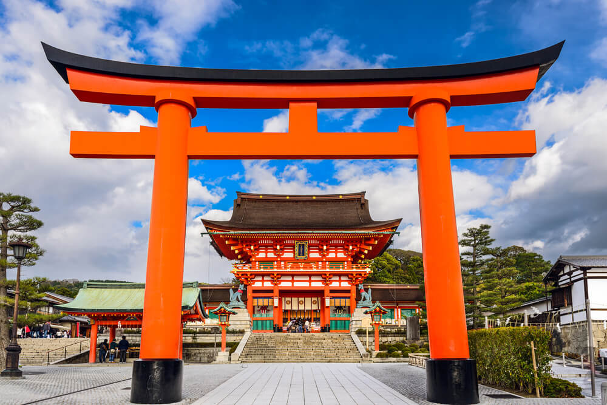

Sejarah
Dalam sejarahnya Negara Jepang pada jaman Paleolitikum mencakup periode yang cukup panjang bahkan hingga mulai tahun 50.000 sebelum masehi dan berakhir sekitar tahun 12.000 sebelum masehi, tepat dengan bagian terakhir jaman es. Artefak-artefak kuno yang ditemukan dari sebelum tahun 38.000 masehi, oleh para arkeolog tidak dianggap, dan menyebabkan mereka semua berpendapat sama bahwa masa Paleolitikum di Jepang dimulai 40.000 tahun lalu, seiring dengan penemuan alat dari batu pertama kali diimplementasikan. Tengkorak manusia yang pertama kali ditemukan ada di Hamamatsu, Shizuoka, yang jika menggunakan penanggalan radiocarbon berasal dari sekitar 14.000 hingga 18.000 tahun lalu. Sayangnya, sejak sebuah hoax yang dibuat oleh Shinichi Fujimura diketahui orang-orang, bukti-bukti Paleolitikum Bawah dan Paleolitikum Menengah ditolak keabsahannya setelah investigasi yang mendalam. Karena hal ini juga hanya beberapa bukti Paleolitikum Atas yang tak berhubungan dengan Fujimura yang bisa dipertanggungjawabkan.
Perkembangan Negeri Sakura Jepang berlanjut dengan periode Joomon yang dimulai kira-kira pada tahun 14.000 hingga 300 sebelum masehi. Tanda-tanda peradaban pertama dan pola hidup yang stabil mulai muncul pada tahun itu juga, dengan peradaban Joomon yang bisa dikenali dengan gaya hidup masa Mesolitikum hingga Neolitikum. Pada masa itu, teknik tenun belum ditemukan, sehingga orang-orang Joomon masih menggunakan baju yang terbuat dari bulu. Mereka juga mulai membuat bejana-bejana dari tanah liat yang memiliki pola-pola dekorasi khas. Pola-pola dekorasi tersebut mereka buat dengan memberi kesan pada tanah liat basah dengan kawat dan kayu yang diikat maupun tidak. Berdasarkan penanggalan karbon, beberapa bukti tembikar ini masih bisa ditemukan di Jepang bersama dengan pisau, batu giok, sisir yang terbuat dari tempurung, hingga barang-barang rumah tangga lainnya yang berasal dari abad ke-11 sebelum masehi.
Periode Joomon usai, dan sejarah berdiri negara Jepang berlanjut pada periode Yayoi yang terjadi sekitar tahun 400 atau 300 sebelum masehi hingga tahun 250 masehi. Periode ini dinamakan Yayoi, dimana bukti-bukti arkeologis pertama kali ditemukan. Permulaan periode Yayoi menandai datangnya kebiasaan-kebiasaan baru seperti menenun, pertanian, juga pembuatan besi dan perunggu. Penggunaan besi dan perunggu ini dimulai bersamaan pada Jepang di masa Yayoi, dimana besi digunakan untuk alat-alat agrikultur sementara perunggu untuk upacara-upacara dan ritual. Periode Yayoi sendiri juga membawa perdukunan dan ramalan oleh peramal-peramal Shinto untuk memastikan adanya bibit yang bagus.
Jepang Kuno dimulai dengan periode Kofun sejak tahun 250 yang dinamai menggunakan nama sebuah bukit pemakaman besar yang bernama kofun ( kuburan kuno) yang mulai muncul pada era tersebut. Periode Kofun ini juga mulai mempraktekkan pembudidayaan tentara militer yang kuat dimana masing-masing terfokus pada klan-klan yang kuat. Pada abad ke-3 hingga abad ke-7, sebuah pemerintahan yang bernama Yamato dibangun dan berpusat pada propinsi Yamato dan Kawachi. Berdirinya pemerintahan Yamato ini juga menandakan dimulainya garis keturunan kaisar Jepang.
Pada periode Asuka yang berlangsung di tahun 538 hingga tahun 710, pemerintahan purwa-Jepang Yamato perlahan mulai menjadi sebuah daerah tersentralisasi dan menciptakan hukum-hukum seperti Kode Taihou. Setelah Buddhisme diperkenalkan oleh raja Seong pada tahun 538 di Jepang, agama tersebut mulai dipromosikan secara besar-besaran untuk kepentingan mereka sendiri. Tadinya, Buddhisme bukan sebuah agama populer di Jepang. Masuknya Buddhisme ini juga menghentikan tradisi penguburan mereka yang telah wafat di kofun-kofun besar.
Masa yang mungkin paling dikenal oleh masyarakat luar Jepang mungkin adalah periode Sengoku setelah sebelumnya melewati periode-periode Nara (710 hingga 759), Heian (794 hingga 1185), Kamakura (1185 hingga 1333), Restorasi Kemmu (1333), dan periode Muromachi (1336 hingga 1573). Periode Sengoku yang juga dikenal sebagai periode perang kerajaan merupakan masa yang penuh dengan perang internal antara kerajaan-kerajaan di Jepang yang memiliki idealisme berbeda-beda. Era ini juga bertepatan dengan kontak pertama Jepang dengan dunia barat, dimulai dengan tibanya saudagar dari Portugis. Kapal saudagar Portugis pertama yang tiba di Jepang mendarat di pulau Tanegashima dan memperkenalkan tentang senjata api kepada masyarakat Jepang. Pengenalan senjata api ini mengubah seluruh sistem perang di Jepang, dimana pada saat terjadi Perang Nagashino, 3.000 arquebus memotong jumlah Samurai. Salah satu periode lain yang sering disebut-sebut diluar Jepang juga adalah periode Meiji dan restorasi Meiji pada tahun 1860-an dimana pada masa ini, biasanya di cerita-cerita komik maupun animasi, merupakan masa dimana samurai berjaya. Periode Meiji dan restorasi Meiji sendiri merupakan tonggak pertama dalam pembangunan Jepang modern.
Sejarah berdiri negara Jepang mencatat adanya perang antara Jepang dengan Tiongkok pada tahun 1894 hingga 1894 yang dikenal dengan Perang Sino-Jepang, dan Perang Russo-Jepang yang terjadi pada tahun 1904 hingga 1905 melawan Rusia. Perang-perang ini juga menunjukkan taring Jepang sebagai kekuatan kekaisaran modern dari timur. Pada masa sekarang, Jepang terus berkembang dan bahkan memimpin dalam bidang teknologi terutama robotik.
Sumber:id.wikipedia.org
Geografi
Negara Jepang merupakan negara kepulauan yang terletak di timur laut pantai Asia. Jepang sendiri terletak di Samudera Pasifik Utara. Laut Jepang memisahkan Negara Jepang dengan Benua Asia yang merupakan benua terbesar di dunia. Sama halnya seperti Indonesia, Jepang juga memiliki ribuan pulau-pulau kecil. Namun, dari ribuan pulau yang dimiliki hanya 4 (empat) pulau besar yang banyak dikenal masyarakat luas, yakni Honshu, Hokkaido, Kyushu, dan Shikoku.
Seacara astronomis Jepang terletak di antara 30°LU-47°LU dan 128°BT-146°BT. Sedangkan secara geografis, Negara Jepang terletak di Asia Timur yang terpisah dari benua Asia atau terletak di sebelah timur benua Asia dan sebelah barat Samudera Pasifik.
Di sebelah utara, Jepang berbatasan dengan Laut Okhstosk, di sebelah timur berbatasan dengan Samudra Pasifik. Batas sebelah selatannya yaitu Laut Cina Timur dan Laut Filiphina. Sedangkan di bagian barat, Jepang berbatasan dengan Laut Jepang dan Selat Korea.
Luas wilayah Jepang lebih kurang 376.520 KM2. Wilayahnya membentang dari utara ke selatan sepanjang lebih kurang 2.400 km dan terdiri atas empat pulau utama, yaitu Pulau Hokkaido (Yesso) luasnya 78.037 km², Pulau Honshu (Hondo), Pulau Shikoku, dan Pulau Kyushu (36.554 km²). Honshu merupakan pulau terbesar di Jepang yang luasnya 227.414 km² dan memiliki penduduk yang paling padat. Di samping keempat pulau utama masih terdapat lebih dari 3.900 pulau lainnya.
Sumber:www.geografi.org
Wisata
Wisata yang paling ikonik di kota jepang adalah Tokyo Disneyland, selain itu ada pula Kuil Fushimi Inari yang berada di kaki Gunung Inari, Fushimi-ku, Kyoto, dan yang paling terkenal adalah Hutan Aokigahara, Yaitu "Suicide Forest" yang sering digunakan untuk Bunuh Diri... wihhh seremm!!
Kuil Fushimi Inari Taisha

Fushimi Inari Taisha (伏見稲荷大社) adalah kuil Shinto yang berada di Fushimi-ku, Kyoto, Jepang. Kuil ini merupakan kuil pusat bagi sekitar 40.000 kuil Inari yang memuliakan Inari. Kuil utama (honden) terletak di kaki Gunung Inari, dan tanah milik kuil mencakup gunung yang tingginya 233 meter.
Di kuil ini dimuliakan Ukanomitama bersama pendampingnya, Satahiko no Ōkami, Ōmiyanome no ōkami, Tanaka no ōkami, dan Shi no ōkami (四 大神).[1] Inari dipercaya sebagai dewa pertanian, sehingga kuil ini dipercaya membawa berkah bagi panen palawija, kesukesan dalam perdagangan bisnis, dan keselamatan di bidang transportasi.
Kuil Fushimi Inari masuk dalam peringkat kuil menurut Jinmyōchō (daftar nama kuil) yang diterbitkan bersama Engishiki. Selain itu, kuil ini berada dalam kelompok 7 kuil papan atas dari daftar 22 kuil utama (Nijūnisha). Dalam sistem lama peringkat kuil Shinto, kuil ini merupakan salah satu dari kampeisha (kuil resmi yang didanai pemerintah Jepang).
Kuil utama yang ada sekarang dibangun tahun 1499 setelah bangunan yang lama habis terbakar sewaktu terjadi Perang Ōnin. Aula utama kuil ini ditetapkan pemerintah Jepang sebagai warisan budaya yang penting. Sejak abad ke-17, penganut kuil Fushimi Inari memiliki tradisi membangun torii. Sekitar 10.000 torii yang berderet-deret di Gunung Inari merupakan hasil sumbangan umat. Di antaranya, Senbon torii (deretan seribu torii) telah menjadi salah satu objek pariwisata.
Sumber:id.wikipedia.org
Hutan Aokigahara a.k.a "Suicide Forest"
Aokigahara (青木ヶ原 Aokigahara) adalah hutan yang terletak di sebelah Barat Laut Gunung Fuji, membentang dari kota Kawaguchiko hingga desa Narizawa, Prefektur Yamanashi. Aokigahara disebut juga "hutan lautan pohon" dan "lautan pohon gunung Fuji". Disebut demikian karena jika angin meniup pepohonan di sana terlihat seperti keadaan ombak di laut. Usia hutan ini diperkirakan sekitar 1200 tahun. Hutan ini dikenal sebagai tempat bunuh diri populer di Jepang.
Keadaan
Tanah Aokigahara terutama mengandung batuan vulkanik dan sulit ditembus dengan peralatan seperti beliung atau sekop. Terdapat pula berbagai jejak/penanda yang digunakan saat pencarian mayat tahunan yang dilakukan oleh relawan setempat. Hutan yang sepi di kaki Gunung Fuji ini benar-benar gelap. Sepanjang jalan, di beberapa titik hanya bisa terlihat pita-pita merah, tas ransel yang ditinggalkan pemiliknya, botol-botol sake kosong, kartu kredit, dan kaus kaki bekas. Benda itu adalah peninggalan orang-orang yang putus asa dan memilih mengakhiri hidupnya di sana. Dalam beberapa tahun terakhir, para wisatawan dan pendaki gunung yang menjelajahi Aokigahara menggunakan selotip plastik untuk menandai jejak mereka agar tidak tersesat.[1] Meskipun pihak berwenang mencoba menghilangkannya berkali-kali, wisatawan dan pendaki gunung terus saja meninggalkan sampah, dan sejumlah besar sampah berserakan di sepanjang kilometer pertama di hutan tersebut, sebelum sampai pada objek wisata yang banyak dikunjungi seperti Gua Es dan Gua Angin. Setelah kilometer pertama dan pada arah menuju Gunung Fuji, keadaan hutan tersebut lebih "lestari", seiring dengan sedikitnya sampah atau benda yang ditinggalkan pengunjung dan sedikitnya tanda-tanda keberadaan manusia.
Sebagai Lokasi Bunuh Diri favorit warga Jepang
Tempat sempurna untuk mati, itulah sebutan untuk hutan Aokigahara. Telah lebih dari 500 kasus bunuh diri telah terjadi sejak tahun 1950-an, dengan pelaku bunuh diri kebanyakan orang dewasa, termasuk orang-orang penting Jepang pun memilih mengakhiri hidupnya di sini. Karena itulah, hutan yang terletak di dasar Gunung Fuji ini dinobatkan menjadi tempat favorit bunuh diri kedua di dunia, setelah Golden Gate Bridge (San Fransisco).
Lantaran punya latar belakang yang suram, hutan ini pun akhirnya sangat seram. Kisah keangkeran hutan ini begitu populer sampai pernah pula diabadikan lewat berbagai macam bentuk. Mulai dari film, buku, dan sampai novel. Kamu mungkin menganggap hutan ini biasa, tapi pada kenyataannya, Aokigahara serius menyajikan berbagai hal seram yang seratus persen akan membuatmu ketakutkan.
Sumber:www.boombastis.com/misteri-aokigahara-jepang86874
Fakta Unik Yang ada di Jepang
Jepang tak terlepas dari fakta-fakta uniknya yang terkesan menjadi budaya dan kebiasaan bagi warganya, tak jarang hal inilah yang menjadi daya tarik wisatawan untuk mendatangi negara tersebut, apa saja faktanya? disini saya akan mengulasnya.
- Merupakan negara yang mempunyai kartun khas disebut 'Anime'
Anime (bahasa Jepang: アニメ, [anime] adalah animasi dari Jepang yang digambar dengan tangan maupun menggunakan teknologi komputer. Kata anime merupakan singkatan dari "animation" dalam bahasa Inggris, yang merujuk pada semua jenis animasi. Di luar Jepang, istilah ini digunakan secara spesifik untuk menyebutkan segala animasi yang diproduksi di Jepang. Meskipun demikian, tidak menutup kemungkinan bahwa anime dapat diproduksi di luar Jepang. Beberapa ahli berpendapat bahwa anime merupakan bentuk baru dari orientalisme.
Anime pertama yang mencapai kepopuleran yang luas adalah Astro Boy karya Ozamu Tezuka pada tahun 1963. Dewasa ini anime sudah sangat berkembang jika dibandingkan dengan anime zaman dulu. Dengan grafik yang sudah berkembang sampai alur cerita yang lebih menarik dan seru. Masyarakat Jepang sangat antusias menonton anime dan membaca manga. Dari anak-anak sampai orang dewasa. Mereka menganggap anime itu bagian dari kehidupan mereka. Hal ini yang membuat beberapa televisi kabel menjadi terkenal akan beberapa film kartunnya, seperti Cartoon Network dan Nickelodeon yang mengekspor kartunnya. Sekarang anime menjadi sebuah bisnis yang menggiurkan bagi semua orang, dan banyak juga orang yang memanfaatkan hal ini untuk bertindak kejahatan. Pembuat anime disebut animator. Para animator bekerja disebuah studio untuk memproduksi sebuah anime. Di dalam studio itu, terdapat beberapa animator yang saling bekerja sama untuk menghasilkan sebuah anime yang berkualitas. Tapi sangat disayangkan, gaji dari para animator tersebut kecil jika dibandingkan dengan kerja keras mereka. Hal ini yang membuat para animator enggan untuk bekerja secara profesional. Mereka merasa hal itu tidak sebanding dengan usaha yang telah mereka lakukan. Para animator itu sering disebut "seniman bayangan". Karena mereka bekerja seperti seorang seniman yang berusaha mengedepankan unsur cerita dan unsur intrinsiknya.
Pembajakan juga mempersulit para animator untuk mendapatkan keuntungan penuh dari hasil kerja keras mereka, meski ternyata juga ada "gosip" yang mengatakan bahwa ada pihak produsen anime yang menyebarluaskan karya mereka di luar jalur perdagangan resmi (mungkin gratisan atau dibajak) dengan tujuan untuk lebih memopulerkan hasil karya mereka.
Tidak sedikit orang yang pergi ke Jepang untuk belajar mengenai pembuatan anime (dan manga tentunya) karena tertarik setelah melihat berbagai anime yang telah menyebar ke berbagai pelosok dunia di berbagai benua.[butuh rujukan] Ada juga pihak yang membuat hasil karya yang serupa atau bahkan mungkin meniru ciri anime, misalnya Korea dan beberapa negara Asia lainnya.
Teknologi CG (Computer Graphics), Teknologi Visual Komputer, dan sebagainya telah mempermudah pembuatan anime sekarang ini, karena itu ada yang menganggap bahwa kualitas artistiknya lebih rendah dibandingkan dengan anime masa lalu. Hanya saja perlu diperhatikan bahwa kualitas gambarnya pun sekarang ini lebih nikmat dilihat dan lebih mudah dimengerti karena gambarnya lebih proporsional dan warnanya lebih bagus, ditambah keberadaan teknologi HD.
Sumber: id.wikipedia.org
Beda Manga, Kartun, dan Anime
- Manga
Manga merupakan istilah lain dari cerita bergambar atau komik. Istilah manga berasal dari Jepang. Manga biasanya menceritakan tentang kebudayaan dan kehidupan masyarakat Jepang. Sebutan bagi orang yang membuat manga adalah mangaka.
- Anime
Anime merupakan istilah untuk menyebut film animasi khas Jepang. Anime merupakan singkatan dari animetion yang memiliki arti gambar bergerak yang terbentuk dari sekumpulan objek.
Biasanya, anime merupakan perwujudan animasi dari cerita manga. Namun, ada pula anime yang dibuat tanpa harus dibuat manganya terlebih dahulu. Dengan kata lain anime adalah sebutan karya animasi atau film kartun yang dibuat di Jepang.
- Kartun
Kartun merupakan karya animasi yang dibuat di luar Jepang. Istilah cartoon atau kartun populer di wilayah Amerika Serikat. Sebenarnya hampir tidak ada perbedaan antara istilah kartun dan anime. Hanya saja kartun lebih banyak menggunakan hewan sebagai objeknya, sementara anime lebih banyak menceritakan tentang kehidupan manusia dan kebudayaan Jepang.
Kesimpulannya, manga adalah istilah komik dalam bahasa Jepang. Sedangkan anime adalah istilah kartun dalam bahasa Jepang. SedangKan kartun merupakan istilah animasi atau anime yang populer di luar Jepang.
Sumber: id.wikipedia.org
- Memiliki kereta tercepat di dunia, yang disebut "Shinkansen"
Shinkansen (新幹線, juga sering dipanggil kereta peluru) adalah jalur kereta api cepat Jepang yang dioperasikan oleh empat perusahaan dalam grup Japan Railways.
Shinkansen merupakan sarana utama untuk angkutan antar kota di Jepang, selain pesawat terbang. Kecepatan tertingginya bisa mencapai 300 km/jam.
Nama Shinkansen sering digunakan oleh orang-orang di luar Jepang untuk merujuk kepada kereta apinya, tetapi kata ini dalam bahasa Jepang sebenarnya merujuk kepada nama jalur kereta api tersebut.
- Sejarah
Shinkansen dibuka pada 1 Oktober 1964 untuk menyambut Olimpiade Tokyo. Jalur ini langsung sukses, melayani 100 juta penumpang kurang dari 3 tahun sejak dibuka pada tanggal 13 Juli 1967, dan melayani satu miliar penumpang pada 1976.
Pada mulanya Shinkanshen dari Tokyo ke Shin-Osaka (615,4 km) memakan waktu kira-kira 4 jam. Pada 1992, Shinkanshen model baru 'Nozomi' yang dapat menghasilkan kecepatan 270 km/j telah menghasilkan perjalanan yang singkat. Rancangan penggunaan landasan kereta api linear motor car pada abad ke-21 yang akan datang ini diharapkan akan menambah kecepatan Shinkanshen.
- Keamanan
Tidak ada daftar kecelakaan yang berakibat fatal dalam pengoperasian Shinkansen sejak sekitar 40 tahun yang lalu. Namun ada beberapa orang terluka dan satu kefatalan dikarenakan pintu yang menjepit penumpang atau barang mereka. Selain itu ada beberapa percobaan bunuh diri oleh penumpang. Karena itu beberapa stasiun telah memasang pagar pelindung. Meskipun begitu tetap saja ada percobaan bunuh diri oleh penumpang yang memanjat pagar pengaman tersebut.
Untuk menghadapi gempa bumi kereta ini dilengkapi dengan sistem pendeteksian yang akan memberhentikan kereta bila gempa bumi terdeteksi. Pada gempa bumi Chuetsu di Oktober 2004 sebuah Shinkansen yang dekat dengan pusat gempa lepas dari relnya, tetapi tidak ada penumpang yang terluka. Kereta generasi berikutnya, FASTECH 360 akan memiliki sayap rem penahan angin (yang mirip dengan kegunaan telinga) untuk membantu proses pemberhentian bila gempa bumi terdeteksi.
- Ketepatan Waktu
Pada 2003, JR Central melaporkan jadwal waktu rata-rata Shinkansen tepat dalam 0,1 menit atau 6 detik dari waktu yang telah dijadwalkan. Ini termasuk seluruh kesalahan alami dan manusia dan dihitung dari seluruh 160.000 perjalanan yang dijalani oleh Shinkansen. Rekor sebelumnya dari 1997 dan tercatat 0,3 menit atau 18 detik.
Sumber: id.wikipedia.org
- Tradisi yang disebut Ojigi
Ojigi adalah budaya/kebiasaan membungkuk kepada setiap warga Jepang yang mengisyaratkan bahwa kita menghormatinya. Membungkuk adalah tindakan menurunkan punggung dan kepala sebagai isyarat sosial kepada orang lain atau simbol. Tindakan tersebut adalah hal umum dalam budaya Asia selain juga merupakan ciri khas dari kaum bangsawan dan aristokrat dalam beberapa negara dan kebiasaan di Eropa.
Bagi pembelajar budaya dan Bahasa Jepang, mungkin budaya membungkuk atau “ojigi” membingungkan karena tidak jelas kapan harus dilakukan. Orang sering menyapa satu sama lain dengan membungkuk, bukan berjabat tangan, dan orang-orang umumnya memiliki percakapan kecil setelah atau sebelum mereka membungkuk. Ojigi dilakukan untuk menunjukkan rasa hormat dan kesopanan terhadap lawan bicara. Sama halnya dengan penggunaan bahasa Jepang yang harus berubah tingkat kesopanannya tergantung lawan bicara, cara melakukan ojigi pun berbeda-beda tergantung objeknya.
Ojigi digunakan untuk berterima kasih, memohon sesuatu, memberi selamat, dan meminta maaf. Semakin formal situasi atau semakin tinggi kedudukan lawan bicara, membungkuklah semakin dalam dan lama, ya mina-san!
Ojigi adalah budaya yang mengakar dalam masyarakat Jepang, bahkan tidak jarang ditemukan orang Jepang yang menelepon sambil melakukan ojigi. Selalu menghormati dan sopan terhadap orang lain memang merupakan esensi orang Jepang yang telah dibentuk sejak lama melalui sejarah panjang.
Budaya ojigi atau membungkuk masyarakat Jepang ternyata tidak hanya dimiliki oleh orang Jepang saja, lho! Suku Jawa di Indonesia punya “mlaku” yang mirip dengan budaya ojigi di Jepang! Mlaku sendiri memiliki pengertian berjalan membungkuk di depan orang yang lebih tua yang tujuannya untuk mengajarkan tata karma dan sopan santun kepada anak agar menghormati orang yang lebih tua.
Meskipun budaya membungkuk sudah sangat identik dengan kebudayaan Jepang, tapi budaya menghormati dan tata karma membungkuk tentu tidak hanya dimiliki oleh orang Jepang saja ya, mina-san! Apalagi sikap sopan santun secara keseluruhan yang tentu harus kita lakukan kepada semua orang tanpa terkecuali.
Sumber: goikuzo.com/ojigi-budaya-membungkuk-di-jepang/